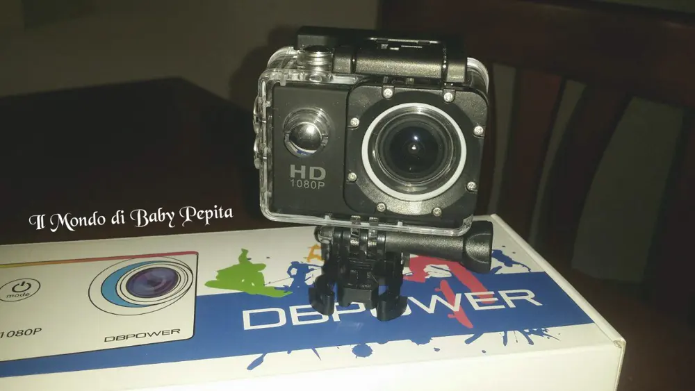
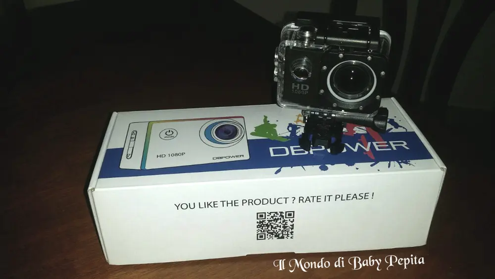
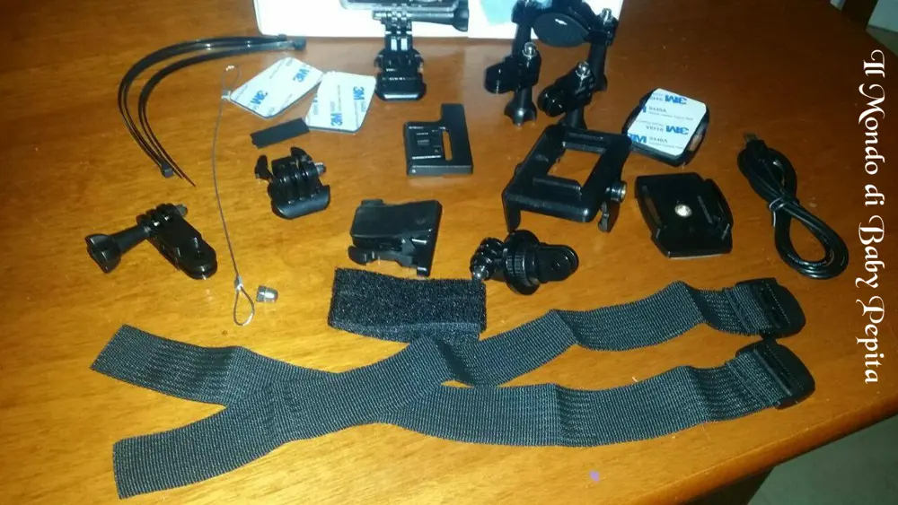
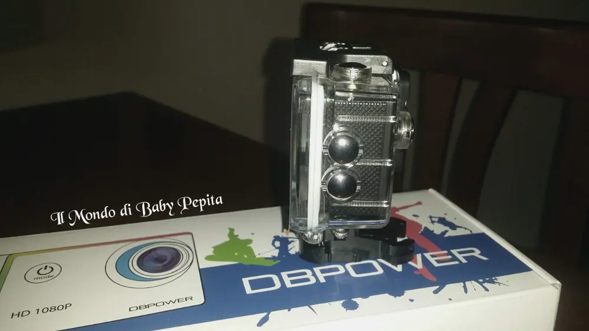
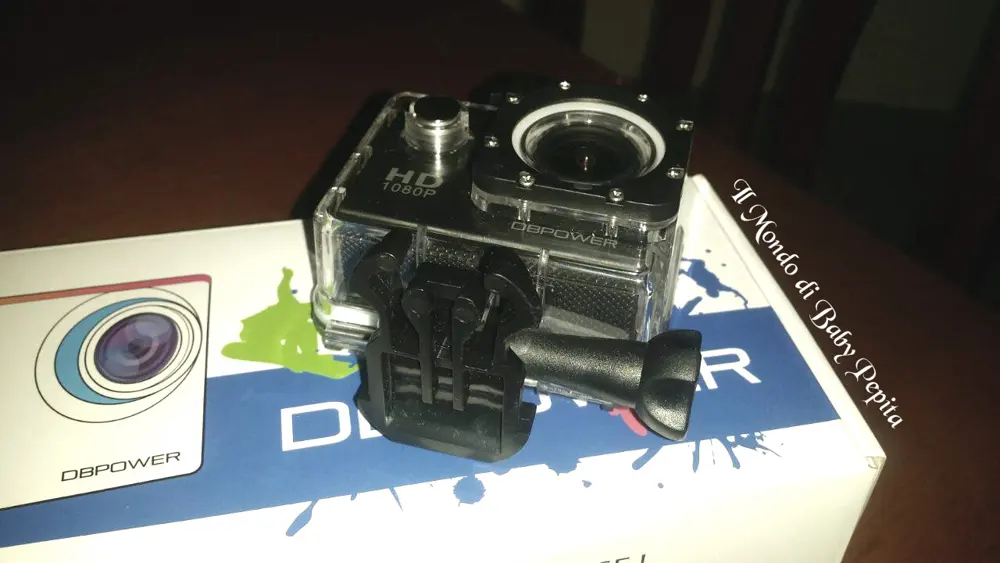
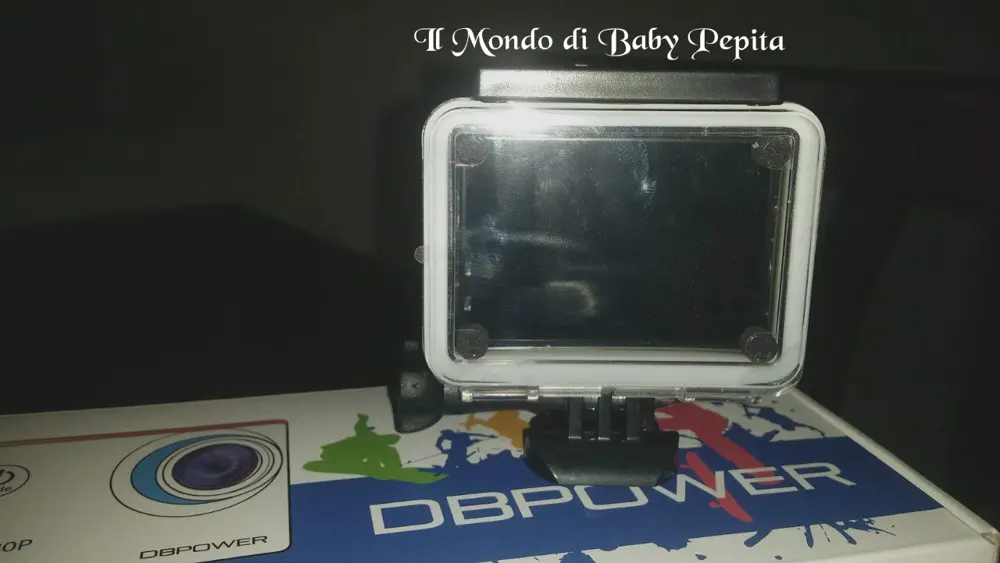
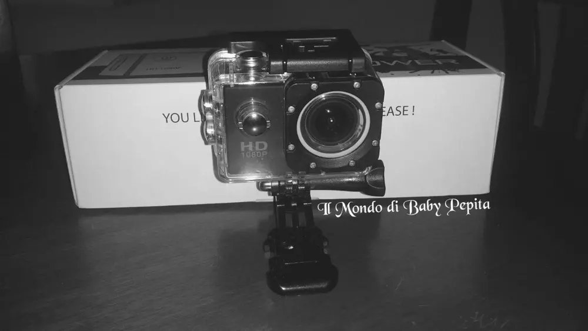
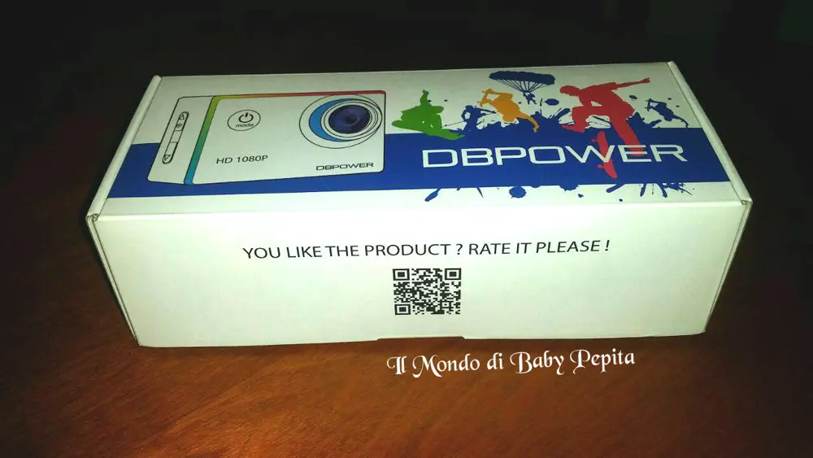

ST. Direct EU - action camera impermeabile 1080 P full HD
 Oggi parliamo di un gioiellino che volevo provare da un bel pò e sono davvero euforica di mostrarvelo. .Dico solo come si chiama:ACTION CAMERA IMPERMEABILE 1080P HD
Oggi parliamo di un gioiellino che volevo provare da un bel pò e sono davvero euforica di mostrarvelo. .Dico solo come si chiama:ACTION CAMERA IMPERMEABILE 1080P HD

Vogliamo vedere di cosa si tratta?La action camera è utilissima per immortalare momenti e paesaggi da mozzafiato.
Si adatta facilmente su bici, moto, abiti e caschi.
Riesce a riprendere le immagini in modo fedele come se stessi rivivendo davvero quell'istante.
In parole povere è piccola e compatta facile da portare anche in borsetta e tirare fuori tutte le volte che si vuole per riprendere momenti da non voler dimenticare con amici e parenti,dato che il suo peso è di circa 60gr.
La cosa pazzesca che caratterizzano proprio queste action camera è che è subacquea, quindi è possibile riprendere paesaggi marini, escursioni marine, un bacio, un relitto. Non so, qualsiasi cosa vogliamo immortalare che vediamo sott'acqua.

 Insieme alla piccola videocamera mi è arrivato anche un kit che contiene:
Insieme alla piccola videocamera mi è arrivato anche un kit che contiene:1x Custodia impermeabile
1x Clip custodia impermeabile
1x Clip multifunzione
1x Sostegno bicicletta
1x Sostegno camera
1x Sostegno casco
3x Ciinture
1x Panno
2x Adesivi 3M
1x Cavo USB
1x Manuale d'uso
2x Batterie Ricaricabili

NOTE NEGATIVE:- All'interno della cam non è presente una memoria interna ma bisogna munirsi di una micro SD
- Non è wifi (al momento dell'acquisto prendete in considerazione anche questa nota.

CONSIGLIO:Attenzione a non selezionare fra le impostazione quella che si chiama "Movement Detection" perché non riguarda la stabilizzazione video bensì fa partire una registrazione al minimo movimento della cam (e diventa difficile stoppare!) quindi evitata quell'opzione.
Il formato dei video che registrate sarà di .movL'audio è ottimo, infatti non si sentono tantissimo i rumori di fondo ma bensì si riesce a sentire una voce limpida e chiara.Un'altra nota positiva è che collegando l'action camera ad un pc può diventare una webcam in alta definizione.Il display è di 1.5 pollici HD LCD, abbastanza grande da riuscire a vedere le anteprime delle nostre registrazioni.
La durata:8 ore di registrazione video in 720p e 5 ore in 1080P. Quindi ore sufficienti anche se si fa un escursione.Sto pensando di utilizzare questa camera per i miei lavori da blogger, credo che renderò seriamente questa camera come amica fedele :D

Prezzo: 49,90€Per acquistarla:https://www.amazon.it/gp/product/B00J01YBF0/ref=oh_aui_detailpage_o05_s00?ie=UTF8&psc=1
Per quanto riguarda me seguitemi:FACEBOOKINSTAGRAMTWITTER